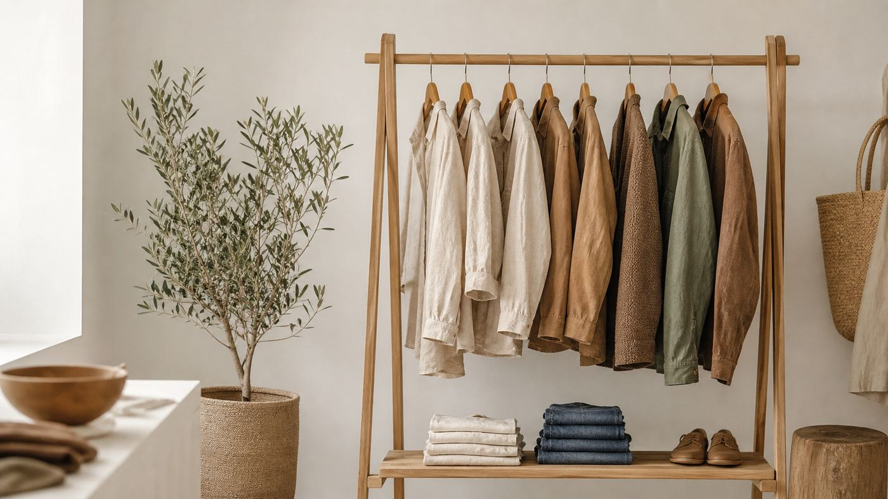

♻️
Reuse More
Clothes can be thrifted, passed down, repaired or restyled instead of being thrown away quickly.
This website explores how our clothing choices can reduce waste, encourage reuse, and make fashion more thoughtful without losing personal style.
Discover My Plan
Fast fashion encourages people to buy more than they need. Sustainable fashion focuses on longer use, better care, and reducing textile waste.
Clothes can be thrifted, passed down, repaired or restyled instead of being thrown away quickly.
Buying fewer pieces that last longer helps reduce overconsumption and unnecessary waste.
A circular approach keeps materials in use for longer through reuse, resale and recycling.
These facts show why clothing waste matters locally and globally.
Textile and leather waste generated in Singapore in 2024.
Singapore's textile/leather recycling rate in 2024.
Estimated share of clothing material recycled into new clothing globally.

Thrift stores, clothing swaps, donation drives and textile recycling points are practical ways people can keep clothes in use longer. These examples show that sustainability does not always require buying expensive eco-friendly products.
See Practical Actions